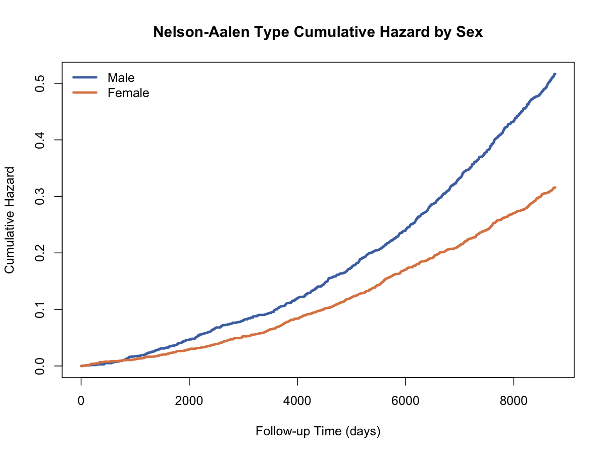

Nelson-Aalen累积风险估计
Nelson-Aalen累积风险估计（Nelson-Aalen Estimator）
方法概览
1.1 一句话本质
Nelson-Aalen 把每个事件时点的「即刻死亡率」$d_i/n_i$ 逐项累加成累积风险 $\hat H(t)$——它和 Kaplan-Meier 看同一份数据，只是把「连乘存活率」换成了「累加风险」，加法尺度让它成为估计风险率、比较风险积累速度的天然工具。
1.2 定义
Nelson-Aalen 估计是在右删失数据下对累积风险函数 $H(t)=\int_0^t h(u)\,du$ 的非参数估计。它不假设任何分布，输出一条阶梯状上升的累积风险曲线，是计数过程生存分析理论的基石，也是 Cox 模型基线累积风险（Breslow 估计）的原型。
1.3 它主要解决什么问题
- 研究问题：到时刻 $t$ 为止，风险「累积」了多少？风险积累是在加速还是减速？
- 适用任务：累积风险估计、风险率形状的探索（恒定/递增/递减）、参数分布选择的诊断、与 Cox 基线风险衔接。
- 常见医学场景：比较不同人群死亡风险的积累速度；检查风险是否恒定（指数分布是否合理）；移植后感染风险随时间的变化形态。
1.4 直觉与类比
把风险想成「里程表」：每经过一个事件时点，里程表就加上该时点的即刻风险 $d_i/n_i$，只增不减。生存概率（KM）像「油箱剩多少」，累积风险（NA）像「已经跑了多少里程」——同一趟旅程的两种读数。里程表的好处是看斜率：曲线越陡说明该时段风险率越高，一段直线意味着风险恒定，弯曲则提示风险随时间变化。
核心思想与原理
2.1 它到底在解决什么根本困难
风险率 $h(t)$（瞬时事件发生强度）是生存分析里最有机制含义的量，但它是密度型的量——数据有限时没法直接估计每个瞬间的风险（每个精确时刻几乎没有事件）。困难是：如何在不做平滑、不设分布的前提下，稳定地估计风险信息？
2.2 关键洞察
不估风险率本身，估它的积分。累积量总比瞬时量好估——正如估累积分布比估密度容易。每个事件时点的风险增量 $d_i/n_i$ 是删失数据下无偏可得的，把它们加起来就得到 $H(t)$ 的估计；风险率的形状再通过看曲线斜率（或对 NA 曲线做平滑求导）间接读出。计数过程与鞅理论进一步保证了这个「累加」估计的优良性质，这正是现代生存分析大厦的地基。
2.3 与朴素/相邻做法的对比
- 相对直接平滑估计风险率：NA 不需要选带宽、不引入平滑偏倚；想要风险率曲线时可对 NA 再平滑（如核平滑）。
- 相对 Kaplan-Meier生存曲线（Kaplan-Meier Estimator）：同一 $d_i/n_i$ 序列，KM 连乘得 $\hat S$，NA 累加得 $\hat H$；$\exp(-\hat H)$ 与 KM 渐近等价（Fleming-Harrington 估计），小样本时 $\exp(-\hat H)\ge \hat S_{KM}$。
- 相对参数模型（指数/Weibull）：NA 不设形状，反而常用来检查参数模型——例如 $\log\hat H$ 对 $\log t$ 作图近似直线支持 Weibull。
数学形式
3.1 核心公式
$$ \hat H(t)=\sum_{t_i \le t}\frac{d_i}{n_i} $$
这个式子在说：累积风险 = 把 $t$ 之前每个事件时点的「风险集中出事的比例」逐项相加。对应的生存函数近似为
$$ \tilde S(t)=\exp\bigl[-\hat H(t)\bigr] $$
——由恒等式 $S(t)=e^{-H(t)}$ 直接代入。
3.2 推导脉络
- 连续时间里 $H(t)=\int_0^t h(u)\,du$，且 $S(t)=e^{-H(t)}$（把「每一瞬都不出事」的连乘写成指数）。
- 在事件时点 $t_i$，风险率的离散增量 $h_i$ 用风险集比例 $d_i/n_i$ 估计——与 KM 完全同源，删失同样只影响 $n_i$。
- 累加即得 $\hat H(t)$。用计数过程记号 $\hat H(t)=\int_0^t \dfrac{dN(u)}{Y(u)}$（$N$ 计事件数，$Y$ 计在险人数），鞅中心极限定理给出渐近正态性。
- 方差估计：
$$ \widehat{\mathrm{Var}}[\hat H(t)]=\sum_{t_i\le t}\frac{d_i}{n_i^2} $$
置信区间常在 $\log H$ 尺度构造以保证为正。
3.3 参数与统计量含义
- $\hat H(t)$：累积风险。注意它不是概率，可以超过 1；$H=1$ 大约对应生存率 $e^{-1}\approx 37\%$。
- $d_i/n_i$：时点 $t_i$ 的离散风险（该时点在场者中出事的比例）。
- 曲线斜率：局部风险率 $h(t)$ 的大小——比较组间「风险积累速度」看斜率差异。
- $\tilde S(t)=e^{-\hat H(t)}$：由累积风险反推的生存函数（Fleming-Harrington 估计）。
3.4 关键假设（含违反后果）
| 假设 | 含义 | 违反后会怎样 | 如何粗查 |
|---|---|---|---|
| 非信息性删失 | 删失与预后无关 | $\hat H$ 系统性偏低/偏高 | 比较删失者与在随访者基线特征 |
| 个体独立 | 事件时间互不影响 | 方差失真 | 看设计（聚集数据需稳健方法） |
| 事件时点记录准确 | 时间粒度足够细 | 大量 ties 使离散近似变粗 | 检查时间单位与重复值 |
| 无竞争风险混入 | 竞争事件未被当删失 | 「净风险」解释失效 | 有竞争事件时改用病因别累积风险/CIF |
手把手算例
沿用 Kaplan-Meier生存曲线（Kaplan-Meier Estimator） 卡的同一组数据：5 名患者，随访时间（月）2, 4, 6+, 8, 10+（+ 为删失）。
一步步计算：
| 时点 $t_i$ | 在场 $n_i$ | 事件 $d_i$ | 增量 $d_i/n_i$ | $\hat H(t_i)$ | $\tilde S=e^{-\hat H}$ | KM 的 $\hat S$ |
|---|---|---|---|---|---|---|
| 2 | 5 | 1 | 1/5 = 0.20 | 0.20 | 0.819 | 0.800 |
| 4 | 4 | 1 | 1/4 = 0.25 | 0.45 | 0.638 | 0.600 |
| 6+ | （删失：只减 $n$，曲线不动） | — | — | 0.45 | 0.638 | 0.600 |
| 8 | 2 | 1 | 1/2 = 0.50 | 0.95 | 0.387 | 0.300 |
| 10+ | （删失） | — | — | 0.95 | 0.387 | 0.300 |
方差：$\widehat{\mathrm{Var}}[\hat H(8)]=1/25+1/16+1/4=0.3525$，SE $\approx 0.594$——5 个人的数据，不确定性自然很大。
从数字读结论：
- 到第 8 个月累积风险 0.95：粗略地说，「平均每人已经历了约 0.95 个单位的死亡风险」。
- 三段增量 0.20 → 0.25 → 0.50 递增：风险积累在加速（后期斜率更陡），提示风险率非恒定，指数分布假设可疑。
- $e^{-\hat H}$ 列（0.819, 0.638, 0.387）与 KM 列（0.80, 0.60, 0.30）同向而略高——印证两者渐近等价、小样本时 $e^{-\hat H}$ 偏高，样本越大两列越接近。
数据形式与输入输出
5.1 适合的数据形式
- 自变量类型：可无分组，或加分组变量画分层累积风险曲线。
- 因变量类型：时间到事件（time + event）。
- 数据结构：每行一个个体。
- 是否适合高维数据：不涉及协变量建模。
- 是否适合缺失较多数据：time/event 缺失需先处理。
- 是否适合删失数据：适合右删失；左截断可经风险集调整处理。
- 是否适合重复测量数据：本卡针对单事件；复发事件的推广（Nelson-Aalen 型均值函数）见多状态/复发事件方法。
5.2 示例表格
与 KM 完全相同的生存数据结构：
| RANDID | TIMEDTH | DEATH | SEX | BMI | AGE_group |
|---|---|---|---|---|---|
| 2448 | 8766 | 0 | 0 | 26.97 | 1 |
| 6238 | 8766 | 0 | 1 | 28.73 | 1 |
| 10552 | 2956 | 1 | 1 | 28.58 | 2 |
| 11252 | 8766 | 0 | 1 | 23.10 | 1 |
5.3 输入与产出
输入
- 输入数据：事件时间、事件指示、可选分组变量。
- 关键变量：
time、event、group。 - 需要预处理的内容：删失编码、时间尺度、随访起点统一。
产出
- 模型对象/统计结果：阶梯上升的累积风险曲线。
- 参数估计：非参数，无回归系数。
- 预测结果：任意时点的累积风险；平滑后可得风险率曲线。
- 不确定性指标：$\sum d_i/n_i^2$ 方差、log 尺度置信区间。
适用场景
- 适合：探索风险率形状（选参数分布前的诊断）、比较组间风险积累速度、作为 Cox 基线累积风险的非参数参照。
- 不适合：面向公众/临床沟通「生存概率」时（KM 更直观）；需要协变量调整时（上 Cox）。
- 使用前需要特别检查的点：事件/删失编码、时间零点、是否存在竞争风险。
实现
常用包：
lifelines
from lifelines import NelsonAalenFitter
naf = NelsonAalenFitter()
naf.fit(durations=df["TIMEDTH"], event_observed=df["DEATH"])
naf.plot_cumulative_hazard() # 阶梯上升曲线 + 置信带
print(naf.cumulative_hazard_.tail()) # 各时点 H(t)
# 平滑风险率:对 NA 曲线做核平滑,看 h(t) 形状
naf.plot_hazard(bandwidth=365)
常用包：
survival
library(survival)
fit <- survfit(Surv(TIMEDTH, DEATH) ~ sex_label, data = df)
plot(fit, fun = "cumhaz") # Nelson-Aalen 累积风险曲线
# 数值版:H(t) = -log(S(t)) 的 NA 型估计
summary(fit)$cumhaz |> head()
# 诊断 Weibull:log H 对 log t 近似直线则支持 Weibull
plot(log(summary(fit)$time), log(summary(fit)$cumhaz))
结果如何解读
- 核心结果看什么：曲线斜率（风险积累速度）及其随时间的变化、组间曲线的分离与斜率差。
- 每个主要参数如何解读：$\hat H(8)=0.95$ 表示到第 8 个月累积了 0.95 单位风险，对应生存率约 $e^{-0.95}\approx 39\%$；它不是「95% 的人出事」。
- 临床或医学意义如何表达：「风险在前 6 个月积累缓慢、之后明显加速」这类速度语言最适合用 NA 曲线支撑。
- 常见误读：把累积风险读成概率（$H$ 可大于 1）；把曲线高度当风险率（高度是积分，斜率才是率）；混淆「瞬时风险」与「累积风险」。
假设诊断与稳健性
- 非信息性删失：与 KM 同样无法直接检验，用基线特征比较与敏感性分析。
- 尾部稳定性：风险集很小时每个增量 $d_i/n_i$ 都很大（如本例末段 1/2），曲线尾部台阶粗大、慎读；报告时配风险集人数。
- ties 较多（时间记录粗）：$d_i\gt 1$ 时可用逐个校正 $\sum_{k=0}^{d_i-1} 1/(n_i-k)$（lifelines 对小风险集自动采用）。
- 检查参数假设：$\hat H$ 对 $t$ 近似过原点直线支持指数分布；$\log\hat H$ 对 $\log t$ 近似直线支持 Weibull——这是 NA 最常见的诊断用法。
推荐可视化
- 分组累积风险曲线：比较风险积累速度（看斜率，而非只看高度）。
- NA 曲线 + KM 曲线并排：同一数据的「里程表」与「油箱」两种读数。
- $\log\hat H$ vs $\log t$ 诊断图：为参数生存模型选分布。
10.1 图像示例
下图展示按性别分层后的累积风险曲线，适合用于呈现风险随时间的积累过程。

优势、局限与常见坑
优势
- 加法结构简单稳定，理论性质好（鞅理论根基）。
- 斜率直接反映风险率形状，是分布诊断利器。
- 与 Cox 模型的 Breslow 基线累积风险无缝衔接。
局限
- 「累积风险」对非统计读者不直观，沟通成本高于 KM。
- 不能调整协变量。
- 尾部风险集小时台阶粗大、不稳定。
常见坑
- 把 $\hat H(t)$ 当成累积发生概率向临床汇报。
- 只看曲线高度不看斜率，错过「风险加速/减速」的信息。
- 有竞争风险时仍然解读为「净风险」。
与相近方法的区别
- 和 Kaplan-Meier生存曲线（Kaplan-Meier Estimator）：同一 $d_i/n_i$，KM 连乘出概率、NA 累加出风险；$e^{-\hat H}$ 与 KM 渐近等价。想对公众讲「还剩多少」用 KM，想对同行讲「风险积累多快」用 NA。
- 和 Cox比例风险模型（Cox Proportional Hazards Model）：Cox 的 Breslow 基线累积风险估计就是「协变量加权版」的 Nelson-Aalen；NA 是它在无协变量时的特例。
- 和参数累积风险（指数：$H=\lambda t$；Weibull：$H=(t/\lambda)^k$）：NA 不设形状，常反过来用于检验这些形状。
- 如何选择：做描述与沟通选 KM；做形状诊断、方法学衔接、复发事件推广选 NA。
医学研究中的典型应用
- 展示不同人群累积死亡风险的积累速度差异。
- 为参数生存模型（指数/Weibull）选择分布形状提供诊断依据。
- 作为理解 Cox 模型基线累积风险（Breslow 估计）的概念桥梁。
关键术语
- 风险率/危险率（Hazard rate）：$h(t)$，在活到 $t$ 的条件下、下一瞬间发生事件的强度；是「率」不是概率。
- 累积风险（Cumulative hazard）：$H(t)=\int_0^t h(u)du$，风险率从 0 到 $t$ 的积分，可大于 1。
- 计数过程（Counting process）：把事件发生记为随时间累计的计数 $N(t)$ 的理论框架，NA 估计的自然语言。
- 风险集（Risk set）：时点 $t$ 仍可能发生事件的个体集合，人数记 $Y(t)$ 或 $n_i$。
- Fleming-Harrington 估计：$e^{-\hat H(t)}$，由 NA 反推的生存函数，与 KM 渐近等价。
- Breslow 估计（Breslow estimator）：Cox 模型下基线累积风险的估计，NA 的回归版推广。
相关方法
参考资料
- Aalen OO. Nonparametric inference for a family of counting processes. Ann Stat. 1978;6(4):701-726.
- Klein JP, Moeschberger ML. Survival Analysis: Techniques for Censored and Truncated Data. 2nd ed. Springer; 2003.
- Aalen OO, Borgan Ø, Gjessing HK. Survival and Event History Analysis: A Process Point of View. Springer; 2008.
- R Core Team / survival package.
survfit. R Manual. https://stat.ethz.ch/R-manual/R-devel/library/survival/html/survfit.html （访问日期：2026-07-02）